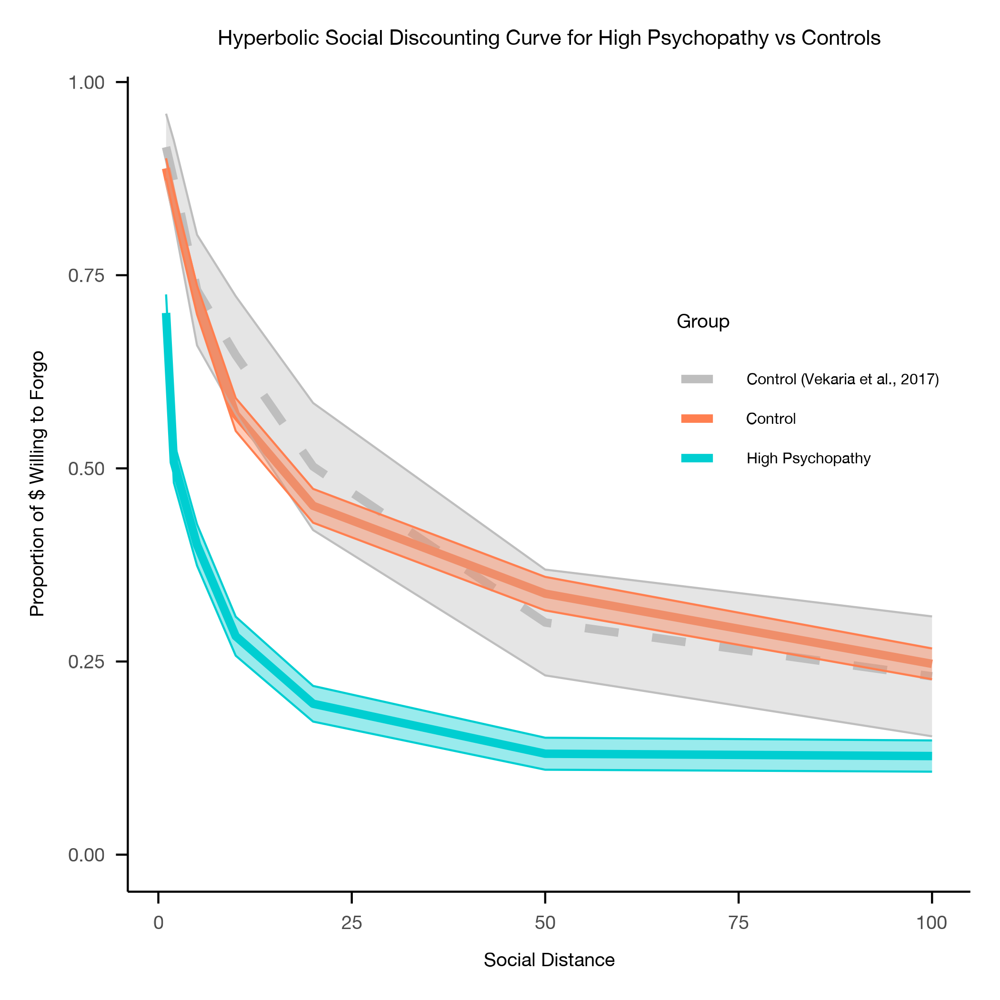

The Social Discounting Task Manual
Conceptual background, administration, and a step-by-step guide for data cleaning and analysis of the Social Discounting Task and the Social Discounting Task Short Form.
General Remarks
This manual provides conceptual background on the purpose of the Social Discounting Task (Jones & Rachlin, 2006, 2009), a description of how the task is administered, and a step-by-step guide for data cleaning and analysis. In addition to the original Social Discounting Task, this manual includes background information, data preparation procedures, and analytic steps for the Social Discounting Task Short Form (Amormino et al., 2025, 2026).
It is designed to be used alongside the accompanying R Markdown script, which walks users through the full data processing pipeline for both versions of the task. The repository also includes downloadable Qualtrics survey templates for the original and Short Form, allowing researchers to easily implement the measures. These templates are pre-formatted with the correct item and question names that correspond with the R Markdown script. Altogether, these materials are intended to support transparent, reproducible use of social discounting paradigms in behavioral research.
Introduction
The Social Discounting task was originally developed by Jones & Rachlin (2006) as a behavioral measure of how individuals value the welfare of others as a function of social distance. In this paradigm, participants make decisions about allocating monetary rewards between themselves and another person who varies in closeness to them, or social distance.
Conceptually, social discounting is closely related to temporal discounting, which examines how people devalue rewards that occur in the future compared to immediate rewards. In contrast, social discounting examines how individuals discount the subjective value of resources as a function of the social distance of the person the resources are shared with. The task, therefore, provides a behavioral index of generosity and the valuation of others' outcomes.
The Social Discounting Task has been used by many researchers examining the relationship between social valuation and prosocial behavior (Amormino et al., 2025), individual differences in personality and antisocial traits (Maleszka & Kalinowski, 2021; Nero et al., 2025; Romanowich et al., 2021; Sharp et al., 2012), social relationships and perceived closeness (Rhoads et al., 2023; Sherman & Lynam, 2017).
This manual provides guidance for implementing and analyzing two versions of the measure:
- The Original Social Discounting Task (Jones & Rachlin, 2006)
- The Social Discounting Task Short Form (Amormino et al., 2025), a shorter, more efficient version of the task
The Measures
The Original Social Discounting Task
The Social Discounting Task asks participants to imagine a list of 100 people, with position #1 being the person closest to them and position #100 being a stranger. Participants are then asked to provide the name and relationship of real individuals they know who correspond to seven specific social distances (N = 1, 2, 5, 10, 20, 50, 100).
For each of the seven names provides (corresponding to seven social distances), participants make a series of nine dichotomous choices. In each choice, participants can select a selfish option (keep money for themselves) or a generous option (share money with the person at the specified social distance). For each social distance, the selfish option begins with the participant keeping $155, and the amount decreases by $10 across nine decisions, ending with the option to keep $75. Alternatively, participants may choose the generous option of splitting $150 with the social distance.
These choices allow for the calculation of the "indifference point", defined as the point at which participants switch from choosing the selfish option to choosing the generous option. From this indifference point, the maximum amount of money the individual is willing to forgo for that social distance is generated by subtracting $75 from the indifference point for each block for each participant. For example, if someone switched from being selfish to being generous at the second trial when offered to keep $145 or split $150, the participant has sacrificed $70 ($145 − $75), representing the maximum amount willing to forgo. This results in 7 "maximum amount willing to forgo" values, one for each social distance, for each participant. These seven values are later used to estimate the social discounting function using a hyperbolic model.
For participants who chose the selfish option for all the trials for the social distance, the indifference point is assumed at the final trial ($75) and the amount willing to forgo is $0. For participants who chose the generous option for all trials in the block, the indifference point is assumed at the first trial ($155) and the amount willing to forgo is $80.
Social Discounting Task Short Form
Although the original Social Discounting Task has produced robust findings (Amormino et al., 2025), completing the task requires answering 9 questions for each of 7 social distances (63 questions total). The Social Discounting Short Form was therefore developed to provide a more efficient version of the measure.
Participants are still instructed to imagine a list of 100 people and then provide the names and relationships corresponding to seven social distances (N = 1, 2, 5, 10, 20, 50, 100). However, rather than making 7 decisions per social distance, participants make a single decision for each distance. This reduces the total number of decisions from 63 to 7 and shortens completion time. For each social distance, participants decide how to split $10 between themselves and the social distance. Response options range from keeping all $10 and giving $0 to the other person, to giving the full $10 to the other person. Importantly, unlike the original task, participants have the option to give more to the other person than they keep for themselves. From these seven decisions, the maximum amount willing to forgo is calculated as $10 − the amount kept for each social distance.
Modeling Social Discounting: The Hyperbolic Function
Social discounting is typically modeled using a hyperbolic discounting function, which describes how the value assigned to another person decreases as social distance increases. The hyperbolic model is defined as:
Where:
- V — amount willing to forgo at a given social distance
- V₀ — model-implied intercept representing baseline generosity (i.e., predicted value at N = 0)
- k — the social discounting rate
- N — social distance
The parameter V₀ represents the intercept, or the amount of money willing to forgo when N = 0. In this analysis pipeline, social distances begin at N = 1. As a result, V₀ is not directly observed in the data but is instead estimated as the extrapolated intercept of the fitted hyperbolic function. The parameter k reflects how steeply generosity declines as social distance increases. Higher k values indicate steeper discounting; lower values indicate shallower discounting. Because k is constrained to be positive and is often highly skewed, it is typically estimated on the log scale and reported as logk. In the model implementation used here, logk is estimated and then exponentiated (i.e., k = exp(logk)) to ensure that k remains positive.
Interpreting logk. A more negative logk indicates shallower social discounting (greater generosity across social distances). A more positive logk indicates steeper social discounting (generosity declining more quickly with distance).
In addition to estimating k, researchers often compute the Area Under the Curve (AUC). AUC is a model-free measure of social discounting and represents the overall generosity across all social distances. It is computed by plotting the amount willing to forgo at each social distance and computing the total area under the resulting discounting curve. AUC values range from 0 to 1, with higher values indicating greater generosity (shallower discounting) and lower values indicating less generosity (steeper discounting).
Both logk and AUC capture the same underlying construct: logk is model-based, AUC is model-free. logk represents the rate at which social valuation changes with social distance, whereas AUC represents overall social valuation across all social distances.
Data Collection
This repository provides two mechanisms for collecting data for both the original and short-form tasks that work with the provided R Markdown analysis scripts: (1) Qualtrics survey templates and (2) R-based Shiny applications. This manual corresponds to the Qualtrics Templates, Shiny Applications, and R Markdown scripts version 1.0.
Qualtrics Templates
Downloadable Qualtrics survey templates are provided for both versions of the task. These templates are pre-formatted with the correct item structure and variable names, allowing for straightforward implementation. Once uploaded into Qualtrics, the surveys can be used without further modification, and response data will align directly with the accompanying analysis scripts.
Shiny Applications
We also provide R code to run custom Shiny applications for both the original task and the Short Form. These are interactive web-based implementations developed in R using the Shiny framework. They standardize task presentation, automate progression, and directly record participant responses in a structured format that corresponds with the analysis scripts.
To run the applications locally, open the corresponding R script in
RStudio and click "Run App" (or execute
shiny::runApp() from the console). Each application
guides participants through the full task sequence:
- Entry of a participant identifier by the researcher
- Instruction screens
- Entry of social distance names and relationships
- Decision-making trials for each social distance condition
Upon completion, the application automatically exports a
.csv file containing participant responses in wide
format that can be combined with those from other participants and
then used in the analysis scripts.
Data Preparation
The following sections describe tips for preparing, cleaning, and analyzing social discounting data. The procedures are based on the outputs from the Qualtrics templates or Shiny apps, but steps can be modified or adapted for datasets collected using other survey formats. This section covers:
- Overview of expected data structure
- Data cleaning procedures
- Calculation of indifference points and maximum amount willing to forgo
- Hyperbolic Model (and comparison to exponential and linear models)
- Extraction of logk and AUC
Data Overview
Using the provided Qualtrics templates or Shiny Apps ensures the correct structure automatically, but if you create your own survey, following these conventions is necessary for the scripts to work properly.
- CSV format: export from Qualtrics as a CSV file with response values, not labels.
- Subject identifier: column
subnumshould contain unique participant IDs. Participants without a value insubnumwill be removed during data cleaning.
Note. The Qualtrics templates have a question where a participant ID can be entered manually; however, Qualtrics can also randomly generate participant IDs (added in the survey flow) or embed IDs into the survey link.
Social Discounting Task: Trial Naming and Variables
Trials from the original social discounting task follow the naming
convention sd[distance]_[trial], where
distance is social distance (1, 2, 5, 10, 20, 50, 100) and
trial is the trial number within that social discounting
block (1–9).
| Social distance | Trial variables |
|---|---|
| 1 | sd1_1 – sd1_9 |
| 2 | sd2_1 – sd2_9 |
| 5 | sd5_1 – sd5_9 |
| 10 | sd10_1 – sd10_9 |
| 20 | sd20_1 – sd20_9 |
| 50 | sd50_1 – sd50_9 |
| 100 | sd100_1 – sd100_9 |
Response coding
Responses are recoded in Qualtrics. For trials 1–8,
0 indicates the participant kept the larger sum of money
for themselves, while positive values (10–80) indicate the participant shared the money.
These positive values are calculated by subtracting 75 from the
amount offered to keep for themselves, generating the amount willing to forgo
that trial (e.g., $155 for you, or give $75 and keep $75, is recoded
to 80). For Trial 9 (keep $75 for yourself, or give $75 to N and
keep $75), -5 indicates the participant kept the money
and 0 indicates they shared. These recoded values are
used to calculate the indifference point and the maximum amount
willing to forgo.
Short Form: Trial Naming and Variables
Trials from the Social Discounting Task Short Form follow the naming
convention X[block number]_SDshortdecision, where the
block number corresponds to social distance (block 1 = N1, block 2 =
N2, block 3 = N5, block 4 = N10, block 5 = N20, block 6 = N50, block
7 = N100).
Response coding
Responses are recoded in Qualtrics and each social distance has one response value. Response options are recoded to reflect the amount given to the N for that choice (e.g., keep $10 and give $0 is recoded to 0).
Data Cleaning & Maximum Willing to Forgo
Social Discounting Task
Using the answer choices in Qualtrics with the recoded values, the following steps describe the data cleaning procedures to calculate participant-level indifference points and the maximum amount willing to forgo.
- Reshape data (wide to long). Raw Qualtrics exports contain each trial as a separate column (e.g.,
sd1_1,sd10_5). To facilitate trial-level processing, the data are converted from wide format to long format. In the long format, each row corresponds to a single trial observation, such that the participant identifier (subnum) is repeated for the total number of trials. After reshaping, thetrialcolumn contains the item or trial name (e.g., sd1_1) and thechoicecolumn contains the participant's response. - Split trial information. Each trial name contains two pieces of information: social distance and trial number within the distance block. These are split into separate columns (
distanceandamount1). - Recode choice values. Most trials are coded as 0 = kept and a positive value (10–80) = shared. Trial 9 uses −5 = kept and 0 = shared. To simplify calculation of the crossover point, −5 is temporarily recoded to 5.
- Remove invalid/missing responses. Ideally for datasets with minimal missingness, rows with missing responses are removed and all
choicevalues are confirmed to be numeric. Only rows withchoice≥ 0 are retained (after recoding −5 to 5). - Convert social distance labels to numeric. Distance labels (
sd1,sd2, …) are converted to numeric values (1, 2, …) in a new column calledDistance. - Compute indifference points and maximum amount willing to forgo. For each participant and social distance, identify the maximum choice for that distance. This represents the crossover point where the participant switched from keeping money. Either a switch from a positive number (10–80) to 0, or a switch from 0 to 5 (if the participant kept money for all trials). The maximum choice value for that distance is stored in a new column called
max_rating. Any temporary 5 values are converted back to −5 to distinguish participants who kept money on all trials as having their maximum willing to forgo at the last trial. The output is a dataframe calledtrial_filtered_datacontaining one row per participant per social distance, with the value undermax_ratingrepresenting the maximum amount willing to forgo.
Reference table — amounts offered to keep
| Trial number | Amount offered |
|---|---|
| 1 | $155 |
| 2 | $145 |
| 3 | $135 |
| 4 | $125 |
| 5 | $115 |
| 6 | $105 |
| 7 | $95 |
| 8 | $85 |
| 9 | $75 |
Note. Alternative methods exist for participants who switch back and forth multiple times, but this approach uses the first crossover to standardize calculations.
Short Form
Data cleaning for the Short Form is more straightforward than the original task because participants make only one decision per social distance, reducing the total number of trials from 63 to 7 and eliminating the need to calculate indifference points.
- Reshape data (wide to long). Raw exports contain one column per social distance decision (e.g.,
X1_SDshort_decision). To facilitate trial-level processing, the data are converted from wide format to long format. In the long format, each row corresponds a single decision for a single participant. After reshaping,trialcontains the trial name andmax_ratingcontains the participant's response for that social distance. - Split trial information. The trial name is split into
distance(e.g.,X1) andamount1(every row will haveSDshort_decision). - Remove invalid/missing responses. Ideally for datasets with minimal missingness, rows with missing responses are removed and
max_ratingis confirmed numeric. Only rows with max_rating ≥ 0 are retained. - Convert social distance labels to numeric. Using the table below.
| Label | Distance |
|---|---|
X1 | 1 |
X2 | 2 |
X3 | 5 |
X4 | 10 |
X5 | 20 |
X6 | 50 |
X7 | 100 |
In the Short Form, each decision directly represents the amount the
participant is willing to give to the N. Therefore, there is no need
to calculate a crossover point — the max_rating column
is equivalent to the maximum amount willing to forgo for that social
distance.
Alternative Estimation Approach for Missing Data
This is only used in the long-form task, where the indifferent point needs to be estimated from multiple decisions within each social distance. In contrast, the short-form task includes only one decision per social distance, meaning the indifferent point is directly observed.
When to use this approach:- Datasets with missing trial-level responses (e.g., neuroimaging or large-scale online studies)
- When the crossover-based method is not appropriate due to incomplete choice sequences
In these cases, the standard crossover-based method for estimating indifference points may not be appropriate, as it relies on observing a complete sequence of choices within each social distance.
To address this, indifference points can alternatively be estimated using a trial-level logistic regression approach, which uses all available observed trials without requiring complete data.
Specifically, we model the probability of choosing to share (coded as 1; keep = 0)
as a function of the amount of money forgone on each trial. The logistic regression
model is defined as: logit(P(share)) = β₀ + β₁ × amount_forgone
Here, amount_forgone represents the monetary cost associated with choosing to share, ranging from $80 to $0 for the original task. The model estimates how the probability of sharing changes as a function of increasing monetary cost by fitting a continuous logistic choice function across this range of observed values.
Rather than identifying a discrete switching point in the observed data, the model describes a smooth decision curve over the range of possible forgone amounts.
The indifference point is defined as the value of amount_forgone at which the predicted probability of sharing equals 0.5. This represents the point of equal likelihood between keeping and sharing and can be interpreted as the participant’s maximum willingness to forgo monetary reward at a given social distance.
At this point, the logit equals zero, and the indifference point can be derived
analytically as: Indifference Point = −β₀ / β₁
Note.
- Participants with no variability in responses (i.e., always choosing to keep or always choosing to share) are assigned boundary values corresponding to the limits of the task, as logistic regression cannot be reliably estimated in the absence of response variability
- Indifference points are not estimated for participant–distance combinations with fewer than three valid responses, as such cases do not provide sufficient information for stable model fitting
This approach yields participant- and distance-specific estimates that are directly comparable to those obtained from the crossover method and can be used in subsequent analyses, such as estimating hyperbolic discounting parameters (log(k)) or area under the curve (AUC).
Hyperbolic Model
After computing the maximum amount willing to forgo for each participant and social distance, the next step is to estimate the hyperbolic discounting function using nonlinear mixed-effects modeling. A nonlinear mixed-effects model (NLME) is a statistical approach used to estimate nonlinear relationships while accounting for both:
- Fixed effects — overall average V₀ and logk
- Random effects — participant-specific deviations in V₀ and logk, corresponding to random intercepts and random effects on the discounting parameter
This allows estimation of individual level discounting parameters while accounting for
repeated observations across social distances. The provided R script uses the nlme
package to implement the hyperbolic model.
1. Base model (no predictors)
The base model estimates the hyperbolic function without including predictors/covariates and is used to obtain participant-level logk values. Researchers should typically (1) run the base model first, (2) extract individual logk values, and (3) use those values in subsequent analyses (e.g., regression models).
Key components:
V₀ / (1 + exp(logk) * Distance)→ hyperbolic functionexp(logk)→ ensures the discounting parameter k is positiverandom = V₀ + logk ~ 1 | subnum→ estimates individual-level parameters
2. Alternative models (optional but recommended)
Although the hyperbolic model is standard in social discounting research, it is good practice to compare it with alternative models. We compare it to an exponential model (constant rate of decline) and a linear model (straight-line decrease).
Models are compared using Akaike's Information Criterion (AIC). AIC balances model fit and model complexity; lower AIC values indicate better-fitting models. We provide two ways to compare AIC:
Delta AIC (ΔAIC)
ΔAIC represents how much worse a model fits relative to the best-fitting model. It is calculated by subtracting the lowest AIC from each candidate model's AIC. In most cases, the hyperbolic model has the lowest AIC, so ΔAIC values for exponential and linear are positive:
AIC weights
AIC weights represent the relative likelihood that each model is the best among the candidate models. Each model is assigned a weight between 0 and 1, with all weights summing to 1. A model with a high AIC weight (close to 1) has strong support.
3. Predictor model
In addition to estimating participant-level discounting parameters, researchers may wish to examine whether individual differences (e.g., demographic variables, personality traits, group membership) predict variability in the social discounting function. The predictor model extends the base hyperbolic model by including predictors/covariates on the discounting rate parameter (logk). Positive coefficients indicate steeper discounting (less generosity); negative coefficients indicate shallower discounting (greater generosity).
Tips. Modify predictors to match variables in your dataset. Predictors in the fixed-effects list (logk ~ ) model individual differences in discounting rate, not baseline generosity (V₀). Ensure the number of starting values for logk (start = c(...)) matches the number of predictors — the first value corresponds to the intercept of logk, followed by one value per predictor in the same order.
Common issues and troubleshooting
When fitting nonlinear mixed-effects models, convergence issues are relatively common. Singularity and non-convergence errors are often related and can arise from similar underlying causes (e.g., poor starting values, overly complex models, or limited variability in the data).
1. Singularity Error
Example Error:

This indicates that the model has reached an unstable or undefined solution during estimation. This can occur due to numerical issues (e.g., poor starting values) or because the model is too complex relative to the data.
2. Non-convergence (Maximum Iterations Reached)
Example Error:

This means the model failed to find stable parameter estimated within the allowed number of iterations.
- Poor starting values for model parameters (V₀, logk)
- Overly complex random-effects structure (e.g., random slopes for logk)
- Limited variability in participant responses (e.g., always choosing 0 or the maximum)
- Too few observations per participant (especially in the Short Form)
- Predictors on very different scales (in predictor models)
- Adjust starting values: choose initial estimates close to plausible values (V₀ near mean
max_rating, logk near −1). Iteratively adjusting starting values is standard practice. - Iteration limits: increase
msMaxIteror adjusttolif convergence is not achieved. - Simplify random effects: consider removing reducing model complexity by removing random effects (e.g., only allowing random intercepts), rather than estimating both participant-specific v) and logk simultaneously.
Extraction of logk and AUC
Once the hyperbolic model has been fitted, the next step is to extract participant-level estimates of social discounting. Two commonly reported metrics are:
- logk — the model-based social discounting rate
- AUC (Area Under the Curve) — a model-free measure of overall generosity
The procedures are the same for both the original task and the Short Form.
Extracting individual logk values
The hyperbolic model estimates two types of parameters:
- Fixed effects — population-average estimates of V₀ (baseline generosity) and logk (discounting rate)
- Random effects — participant-level deviations from these averages
To obtain participant-specific logk values:
- Extract the random effect deviations for logk. These represent how much each participant's discounting rate differs from the population average.
- Repeat these random effects for each row in the dataset so that they align with the number of social distances per participant.
- Extract the fixed-effect estimate for logk.
- Combine the fixed effect and the random effect to produce the final participant-level logk values.
Extracting Area Under the Curve (AUC)
AUC provides a model-free measure of overall generosity:
- For each participant, the amount willing to forgo is plotted across all social distances (1, 2, 5, 10, 20, 50, 100).
- The area under this curve is calculated using numerical integration (trapezoidal method), which treats each pair of adjacent points (willingness to forgo at two successive social distances) as a trapezoid. For each interval, the area is computed as:
Difference in N * Average of adjacent willingness-to-forgo valuesThe difference in social distance (ΔN) represents the spacing between adjacent distance values (e.g., 2 − 1, 5 − 2, 10 − 5), which is not constant across the task. The segment-wise areas are then summed to produce a single raw AUC value per participant. - The resulting raw AUC value is then normalized by the maximum possible area to yield a standardized AUC value bounded between 0 and 1. The normalization is defined as:
Maximum N - Minimum N * Maximum Amount Able to ForgoThis reflects the total span of the observed social distance axis (i.e., 100 − 1 = 99), over which the trapezoidal integration is performed. - For the Original Social Discounting Task this is 99 * 80
- For the Social Discounting Short Form this is 99 * 10
- Higher AUC values indicate greater generosity and shallower social discounting; lower AUC values indicate steeper discounting.
Unlike logk, AUC does not rely on fitting a specific model and provides a complementary perspective on overall social valuation across distances.
Summary. logk captures how rapidly generosity declines with social distance (model-based). AUC captures overall generosity across all social distances (model-free). Both metrics are useful for individual-differences analyses, allowing researchers to relate social discounting behavior to personality traits, demographic variables, or other outcomes.
Visualization
Visualizing participants' generosity across social distance provides an intuitive representation of social discounting behavior. The plot shows the proportion of the maximum amount participants are willing to forgo at each social distance.

Key features of the visualization
- Scaling. Values are expressed as a proportion of the maximum possible amount (percentage). This ensures curves are directly comparable across participants, groups, and task versions.
- Group comparisons (optional). If a grouping variable (e.g., experimental condition or demographic group) is present, separate curves are plotted for each group. Shaded ribbons represent ±1 standard error of the mean, providing a visual sense of variability within each group.
- Single curve (no groups). If no grouping variable is present, a single curve is plotted with a shaded ribbon representing ±1 standard error across all participants.
- Interpretation. Steeper declines in the curve reflect steeper social discounting (participants give less as social distance increases). Flatter curves indicate shallower discounting. The curve can also be compared visually to individual or group-level logk estimates.
This visualization is useful both for descriptive reporting and for checking whether the hyperbolic model captures the overall pattern of generosity in the sample.
References
Amormino, P., Gao, J., Li, P., Induni, S., Amar, S., Balabanis, K., Burt, A., Dockray, K., Doherty, H., Dube, N., Janney, L., Kales, E., King, I., Kronthal, E., Lee, B., Regan, E., Romero, I., Jones, B. A., Seaman, K. L., & Marsh, A. A. (2025). Social discounting and anti-/pro-sociality: A meta-analysis and (short-form) replication. Personality and Individual Differences, 247, 113447. https://doi.org/10.1016/j.paid.2025.113447
Amormino, P., Graue, A. E., Marsh, A. A., & Wilson, A. V. (2026). Development and Validation of the Social Discounting Task: Short Form. Social Psychological and Personality Science, 17(4), 536–543. https://doi.org/10.1177/19485506251328706
Jones, B., & Rachlin, H. (2006). Social Discounting. Psychological Science, 17(4), 283–286. https://doi.org/10.1111/j.1467-9280.2006.01699.x
Jones, B., & Rachlin, H. (2009). Delay, Probability, and Social Discounting in A Public Goods Game. Journal of the Experimental Analysis of Behavior, 91(1), 61–73. https://doi.org/10.1901/jeab.2009.91-61
Malesza, M., & Kalinowski, K. (2021). Willingness to share, impulsivity and the Dark Triad traits. Current Psychology, 40(8), 3888–3896. https://doi.org/10.1007/s12144-019-00351-5
Nero, N., Dressel, M., Amormino, P., Freeburg, P., Somers, M., Poplinski, L., Duhamel, K., Alvarez-Toro, V., & Marsh, A. A. (2025). Adults with more severe psychopathy in the community show increased social discounting. Communications Psychology, 3(1), 175. https://doi.org/10.1038/s44271-025-00353-z
Rhoads, S. A., O’Connell, K., Berluti, K., Ploe, M. L., Elizabeth, H. S., Amormino, P., Li, J. L., Dutton, M. A., VanMeter, A. S., & Marsh, A. A. (2023). Neural responses underlying extraordinary altruists’ generosity for socially distant others. PNAS Nexus, 2(7). https://doi.org/10.1093/pnasnexus/pgad199
Romanowich, P., Igaki, T., Yamagishi, N., & Norman, T. (2021). Differential Associations between Risky Cell-Phone Behaviors and Discounting Types. The Psychological Record, 71(2), 199–209. https://doi.org/10.1007/s40732-020-00446-7
Sherman, E. D., & Lynam, D. R. (2017). Psychopathy and low communion: An overlooked and underappreciated core feature. Personality Disorders: Theory, Research, and Treatment, 8(4), 309–318. https://doi.org/10.1037/per0000203
Vekaria, K. M., Brethel-Haurwitz, K. M., Cardinale, E. M., Stoycos, S. A., & Marsh, A. A. (2017). Social discounting and distance perceptions in costly altruism. Nature Human Behaviour, 1(5). https://doi.org/10.1038/s41562-017-0100